Bioluminescent psychedelia on a terminal void. The visual says trip; the docs say measured on this machine. That tension is the identity.
A spotted mushroom on the magenta→violet→cyan gradient. The stem is cream fading to spore-amber. Acid-lime mycelium threads ripple at the base — the visible mushroom grows out of the network. It breathes, glows, and sheds spores.

64×64 grid. Cap carries the full spectrum gradient; spots are void-purple with cyan pupils (classic psychedelic iconography). Stem cream→amber with a skirt ring. Threads in acid lime, branching and tapering, with nodes. Spores drift on staggered timings.
Dark-first. The product lives in a terminal; dark is the native habitat. Click any swatch to copy its hex.
All three families are open-licensed (OFL). The site self-hosts woff2 subsets.
Every mcy command opens with a 1.4-second mushroom bloom — cap grows in gradient rows, stem descends, threads spread, spores drift, the gradient wordmark lands. Motion with manners: TTY only, --no-splash / MYCELIUM_NO_SPLASH=1 skips it, and --json or pipes never see it.
# the final frame, as truecolor ANSI — mcy/splash.py renders it .-~~~~~~~-. .' o o o '. / o * o \ | * o* o | \ o * / '-._____.-' | | / \ ~ ~ ~ ~ ~ ~ ~ ~ ~ ~ ~ ~ ~ ~ ~ ~ ~ ~ ~ ~ ~ ~ ~ ~ * * * mycelium · plant it once, it grows
Four things that are always right, four that are always wrong.
Mark on the void or on panel #1E0B36, at or above 16px.
No white or cream backdrops. The void is the habitat.
Magenta → violet → cyan, in order, for any lockup.
Corporate blue, default purples, one-off hues.
Web contexts use the animated SVG; print/og use the PNG renders.
No rotation, no hue shifts, no drop shadows, no effects.
Compositions carry a single glow; accents stay ≤15% of any surface.
Lime and amber are accents only. The mushroom is the loud element.
Full documentation in brand/ASSETS.md.
| File | Format | Use for |
|---|---|---|
| logo-mark.svg | animated SVG | app icon, avatar, any web context at ≥16px |
| logo-horizontal.svg | animated SVG | README header, site nav, slides, ≥96px |
| wordmark.svg | animated SVG | text lockups, merch, footers |
| favicon.svg / .ico | SVG + ICO 16/32 | browser tabs, installs |
| social-card.svg → og-image.png | SVG + 1200×630 PNG | OG/Twitter cards (PNG is what platforms read) |
| banner.svg / banner.png | SVG + 1280×640 PNG | repo social preview |
| png/logo-{64…1024}.png | PNG | anything that can't render SVG |